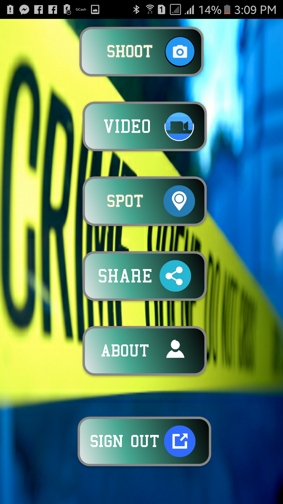
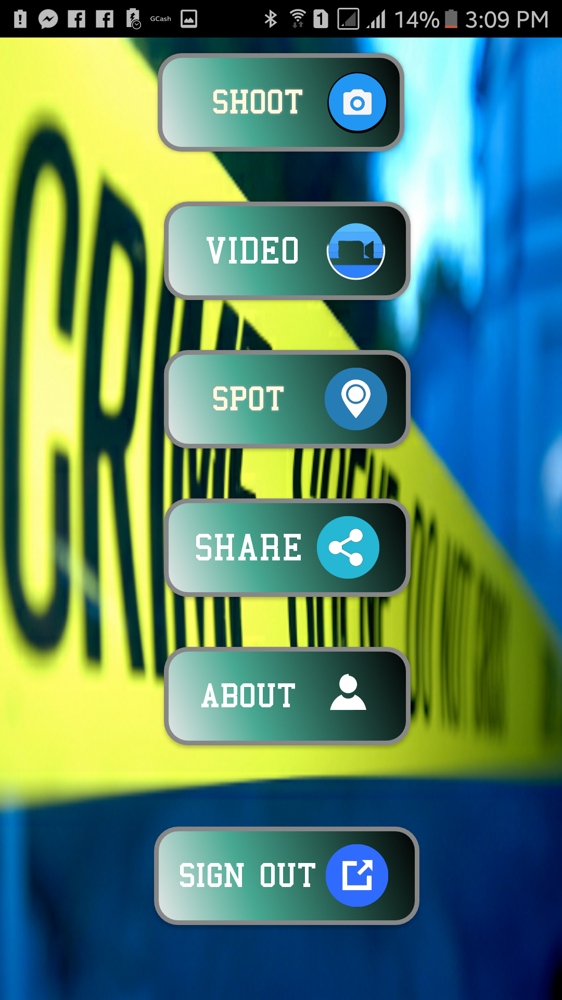
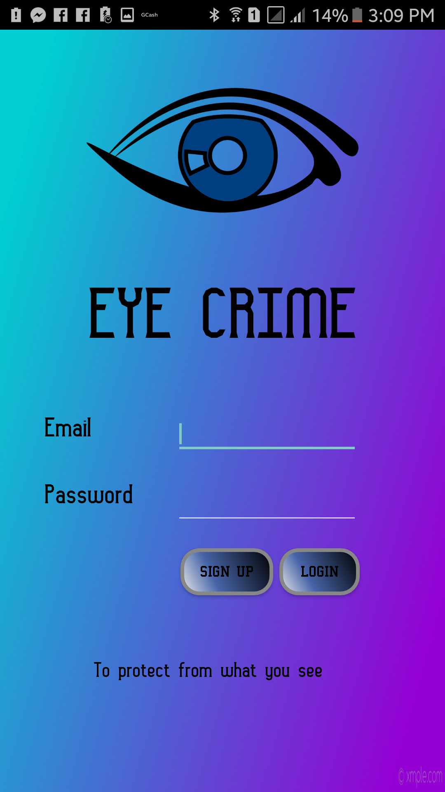

What is Eyecrime?
2018
Eyecrime is an app that prevents the act of crime that might terrorize an individual
Report any crime activities in your surroundings. Alert Your Friends and your loved ones and etc.
2018
Report any crime activities in your surroundings. Alert Your Friends and your loved ones and etc.
2018
The phone app "EyeCrime" created a bit of a stir when it launched in Davao City, providing near-instant alerts of nearby crimes and emergencies in the surroudnings. It seemed to encourage citizen intervention in crime, if only by its name if not by its lengthy “Terms of Use,” and that’s why Apple booted “Vigilante” from its app store a day after its October release. But now the app is back, rebranded as “Eyecrime” and relaunched available for real-time crime notification on all Android devices.
2018
Eyecrime is the brainchild of technology students Christian Miguel Dorado, Ervin James Villegas , and Harryn Glyde Llait who founded the Davao-based start-up Sp0n to create both the software for the app and the staffing to process and post the information. Sp0n employees monitor the unencrypted police and fire scanner frequencies in New York, listening to emergency dispatches and mapping them, along with brief descriptions of the event. Then they push alerts to people in the vicinity of the events, as well as create a searchable map of recent incidents. Users who receive alerts can either avoid the area, keeping themselves safe, or approach and observe the situation, possibly live-streaming the video through the app. The anti-crime app "Eyecrime" which provides real-time alerts to crime in a user's vicinity, relaunched Wednesday but is only available in New York City for now. The anti-crime app “Eyecrime” which provides real-time alerts to crime in a user’s vicinity, relaunched Wednesday but is only available in New York for now. (Sp0n)
March 27, 2018